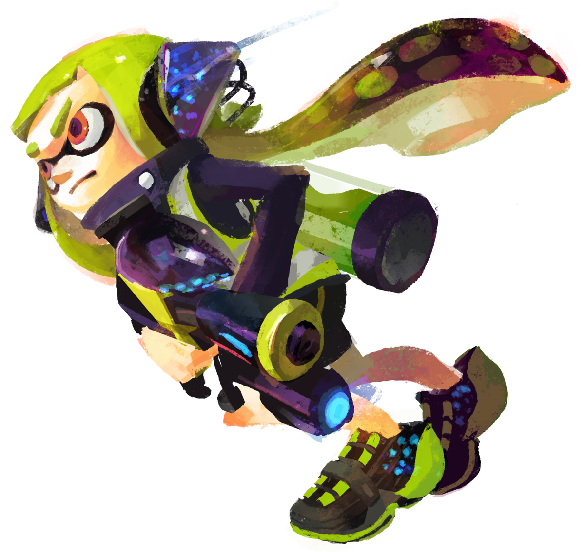
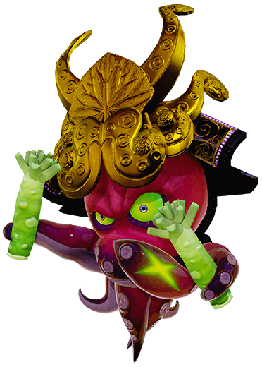

Agente 3
Es el protagonista, se trata de un Inkling. Es el personaje del cual el jugador asume el control en el Distrito Pulpo, reclutado/a por el Capitán Jibión.

DJ Octovius
DK Octovius es el líder de los Octarianos y el antagonista principal. Igualmente, él es el antiguo amigo del Capitán Jibión convertido en su archinémesis.
